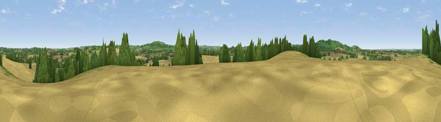

Viewpoint near Honington
#26009 in England · top 52% of its area beats it · near HoningtonWhere it is
The exact computed spot (SP 25175 42575). Click the marker for map links.
The view, rendered

A 360° render of this exact spot computed from the terrain model, tree cover and land cover — summer colours, afternoon light, calibrated against photographs of famous viewpoints. Real trees, hedges and buildings will differ in detail.
The panorama
Grey silhouette: terrain skyline in each direction (720 bearings, Earth curvature and refraction included). Dashed green: skyline with trees (+15 m) and buildings (+8 m) as obstacles. Blue strip: how far the ground is visible on each bearing.
Where the view opens
Wedge length = distance to the farthest visible ground on that bearing (vegetation-aware). Rings at 10, 25 and 50 km.
What fills the view
51% cropland · 34% grassland · 14% woodland · 1% built-up
Angular shares of the visible panorama (visual magnitude), not map area. Landscape diversity 0.45 (0–1 Shannon).
Key numbers
More beautiful places nearby
The staircase of upgrades: each row has a higher view potential than everything closer. Driving times are estimates from straight-line distance, calibrated against real road routing — check an actual route before setting out.
| Place | Direction | Drive | Score |
|---|---|---|---|
| Viewpoint near Tredington | N · 0 km | ~1 min | 49.0 |
| Viewpoint near Honington | E · 2 km | ~6 min | 49.8 |
| Viewpoint near Ilmington | W · 4 km | ~10 min | 66.6 |
| Viewpoint near Ilmington | W · 4 km | ~10 min | 72.6 |
| Viewpoint near Meon Vale | WNW · 8 km | ~16 min | 77.0 |
| Broadway Hill | WSW · 15 km | ~27 min | 77.7 |
| Viewpoint near Elmley Castle | W · 28 km | ~44 min | 80.5 |
| Bredon Hill | W · 29 km | ~46 min | 83.0 |
52.08096, -1.63405 · source: screening · position refined by local search. Computed location — check access rights before visiting.